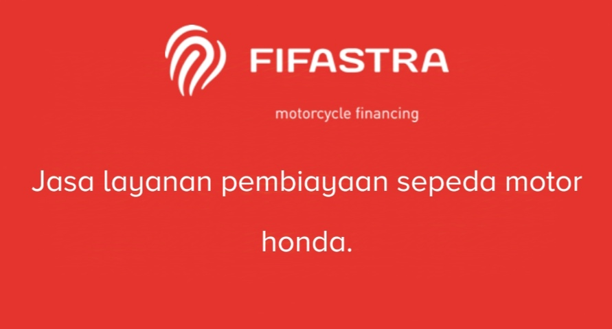
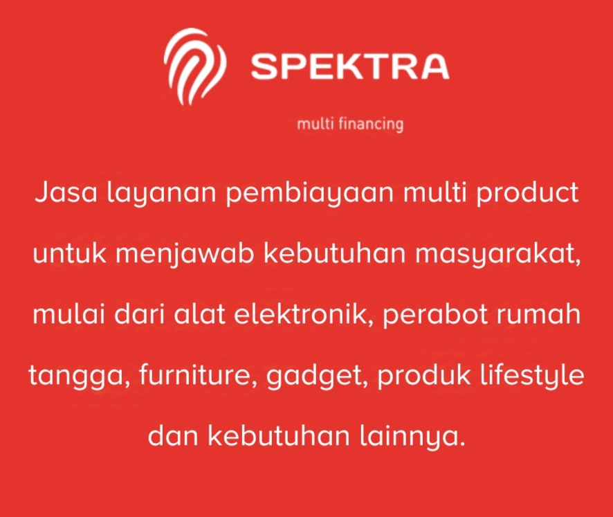
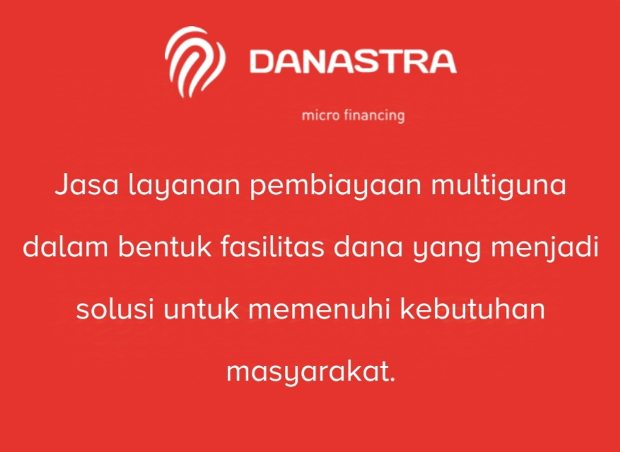
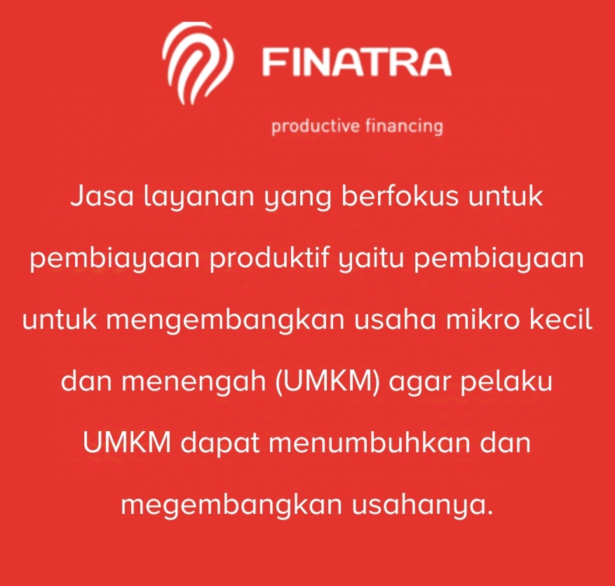
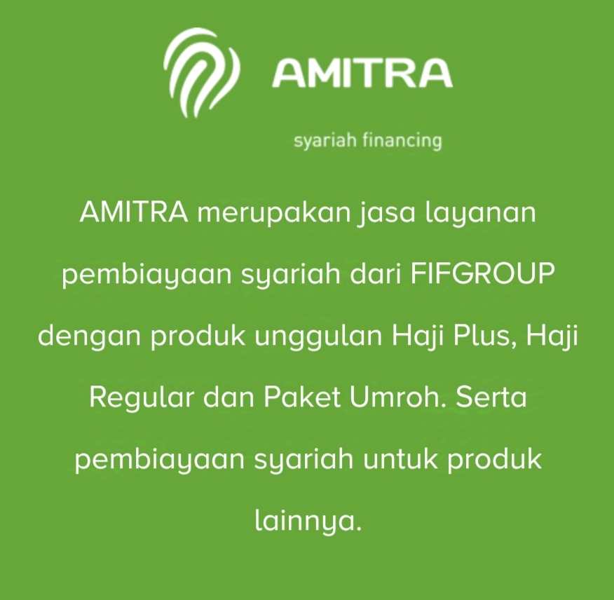

Tentang Kami
PT Federal International Finance (“FIFGROUP”) FIFGROUP adalah perusahaan pembiayaan konvensional dan syariah bagi konsumen yang ingin membeli berbagai kebutuhan seperti pembiayaan motor Honda melalui FIFASTRA, pembiayaan elektronik dan perabotan rumah tangga melalui SPEKTRA, pinjaman tunai melalui DANASTRA, pembiayaan usaha melalui FINATRA, pembiayaan haji dan umroh serta pembelian emas melalui AMITRA. PT Federal International Finance (“FIFGROUP”) didirikan dengan nama PT Mitrapusaka Artha Finance pada bulan Mei 1989. Berdasarkan ijin usaha yang diperoleh dari Menteri Keuangan, maka Perseroan bergerak dalam bidang Sewa Guna Usaha, Anjak Piutang dan Pembiayaan Konsumen. Pada tahun 1991, Perusahaan merubah nama menjadi PT Federal International Finance Namun seiring dengan perkembangan waktu dan guna memenuhi permintaan pasar, Perseroan mulai memfokuskan diri ke pembiayaan sepeda motor Honda pada bidang pembiayaan konsumen secara retail pada tahun 1996. Pada mei 2013, Perusahaan meluncurkan merek FIFGROUP. Saat ini berdasarkan Peraturan Otoritas Jasa Keuangan Nomor 29/POJK.05/2014, maka bidang usaha FIFGROUP adalah:
1.Pembiayaan Investasi;
2.Pembiayaan Modal Kerja;
3.Pembiayaan Multiguna, Sewa Operasi (Operating Lease) dan/atau kegiatan berbasis fee;
4.Pembiayaan Syariah meliputi Pembiayaan Jual Beli, Pembiayaan Investasi, dan/atau Pembiayaan Jasa yang dilakukan dengan menggunakan akad berdasarkan prinsip syariah; dan
5.Pembiayaan lain berdasarkan persetujuan Otoritas Jasa Keuangan.
Layanan Kami
FIFGROUP bergerak di bisnis layanan pembiayaan dengan nama merek berikut:
    FIFGROUP hadir untuk mengakomodir keanekaragaman kebutuhan masyarakat Indonesia dengan senantiasa berpegang pada prinsip inovasi dan kreativitas. ‘Mengubah tantangan menjadi peluang’ adalah landasan pemikiran yang membuat FIFGROUP terus berkembang.
Struktur Organisasi FIFGROUP

Kontak Kami
Email: CorporateSecretary@fifgroup.astra.co.id
Telepon: : (021) 7698-899/ Fax (021) 7590-5599
Alamat:
Menara FIF
Jl. T.B. Simatupang Kav.15,Cilandak. Jakarta 12440